An Organizational Chart defines the hierarchy of divisions and jobs in the organization.It describes how the roles, authority, and responsibilities of a company’s employees are assigned.
Modeling an org сhart is one of the first steps in setting up BRIX.
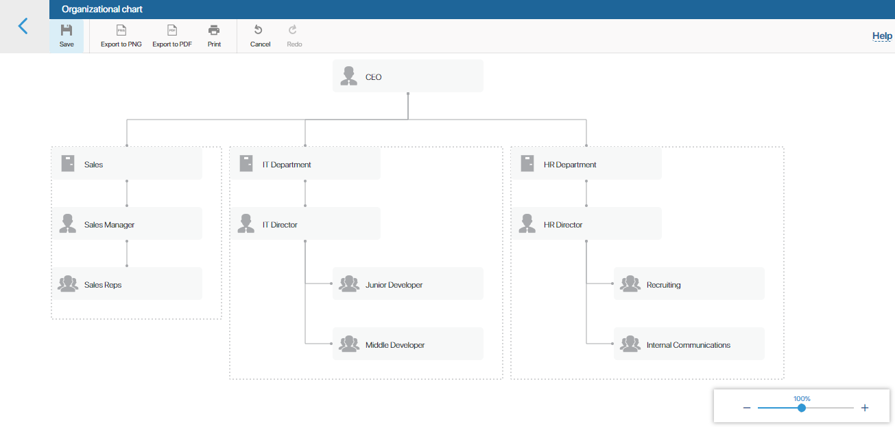
Purpose of the org chart
In BRIX, the org chart reflects the real structure of your company. According to the org chart, roles are assigned to participants of the business processes. It is also used to assign access permissions to various workspaces of the system.
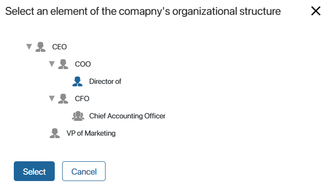
Start modeling
To start modeling, go to Administration > Org Chart.
начало внимание
Only users included in the Administrators group can create or edit the org chart.
конец внимание
By default, the head element is already added to the org chart page. 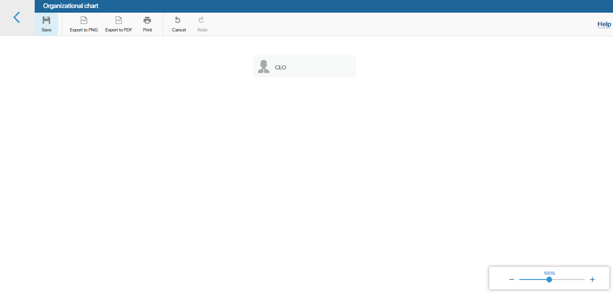
To add a new item, hover the mouse over an existing item and click on one of the icons that appear.
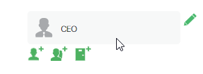
Org chart items
Organizational chart items are used to describe the hierarchy in the company. In BRIX there are three types of items: job position, group, and department.
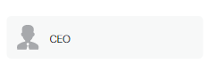 |
Job position. You can select only one employee for a job position. For example, CEO, chief accountant, secretary, etc.; |
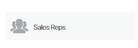 |
Group. Defines a group of users with common job responsibilities. |
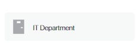 |
Department. Consists of an unlimited number of employees and one department head. Inside the department, you can create groups of employees and individual job positions. |
To configure the department structure, click on its name or on the Expand button.
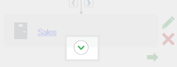
If you want to rename, move, or delete an item of the org chart, hover the mouse over the item and select the action you want to perform.
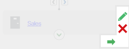
To move an item, select the job position that stands higher in the organizational hierarchy. 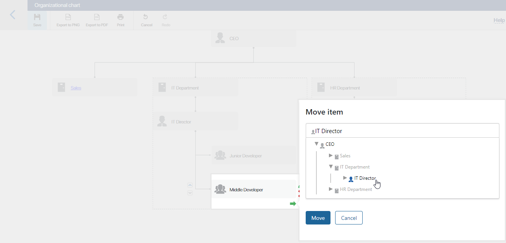
You can also reorder the items belonging to one level of hierarchy by clicking  or
or  . This will not change the hierarchy but the order in which the items are displayed in the org chart.
. This will not change the hierarchy but the order in which the items are displayed in the org chart.
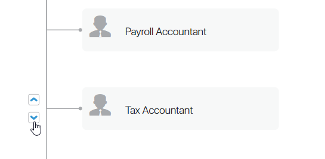
Save the org chart
To apply changes and make the org chart available, you need to save it. To do this, click the Save button on the top panel of the page. After that users will be able to view it in Company > Company Structure.
Assign users to job positions
After having created and saved the org chart, you can assign users to job positions. To do this, go to Administration > Users. Select a user and click on the Edit button. In the Position field, start typing the job title or click the magnifying glass icon to view the company structure and select the desired item.
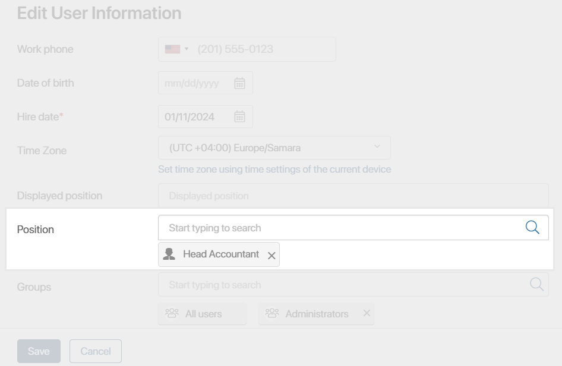
If you select a position that is already occupied by another employee, you will see a warning showing the user assigned to this position. You can remove the user from the position or assign them to another position by editing their profile. After saving these changes you will be able to assign the new user to the desired position.
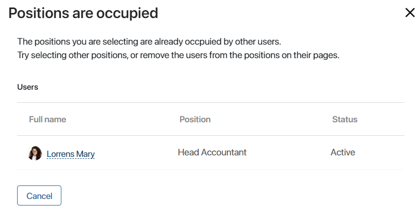
Edit the org chart
If you want to edit the organizational chart, go to the Org Chart page, make the changes and click the Save button. The changes will be immediately applied.
Export the org chart
You can download the org chart as a .png or .pdf file. To do that, click Export to PNG or Export to PDF in the toolbar. The org chart is also downloaded during the export of the system configuration.
Found a typo? Select it and press Ctrl+Enter to send us feedback